Q8.40
Solution
Paramagnetic tends behaviour to increase as the number
of unpaired electron increase
the ferric ion fe+3 is more
paramagnetic than the ferrous ion Fe+2
because ferric
ion 5 unpaired electron
Q8.41
Solution
(a) Acidic Medium->
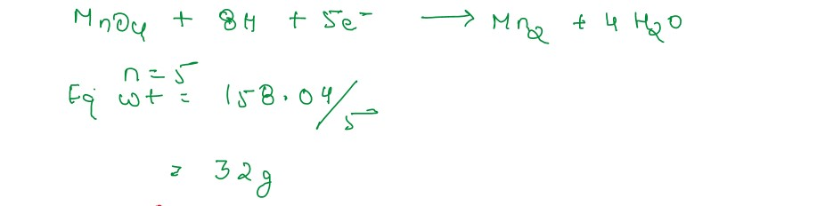
(b) Basic Medium->
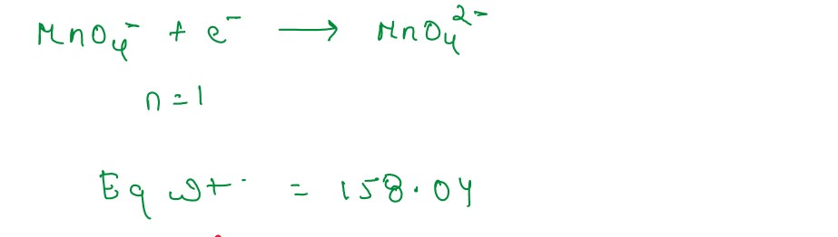
(c) Neutral Medium->
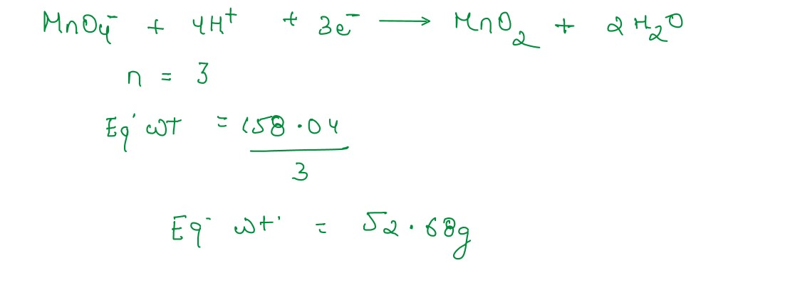
Q8.42
Solution
KMnO4 is prepared from Pyrolusite ore (MnO2).
The finely powdered Pyrolusite ore (MnO2) is fused
with an alkali Hydroxide like KOH in The presence
of air or an oxidising agent like KNO3 to give the dark green
(K2MnO4)
K2MnO4 disproportionate in a neutral or acidic
solution to give KMnO4
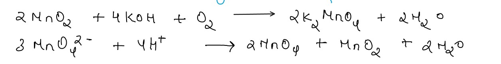
Q8.43
Solution
K2Cr2O7 is generally preferred over
Na2Cr2O7
in volumetric analysis because Na2Cr2O7 is Hygroscopic in nature
,i.e, it absorb moisture from the
atmosphere this could lead in inaccurate
measurement of wt.
Hence K2Cr2O7 is preferred over
Na2Cr2O7 in volumetric analysis.
Q8.44
Solution
(i) when NaCl is heated with K2Cr2O7 and conc
H2SO4 the reaction take place
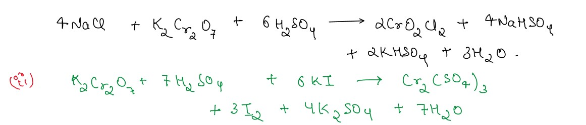
K2Cr2O7 reacts with H2SO4 and KI to produce
Chromium(III) sulphate,I,potassium sulphate & H2O
Q8.45
Solution
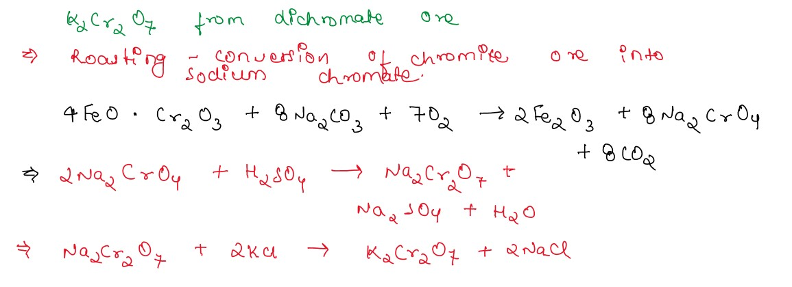
(b) (i) In presence of dilute H2SO4,K2Cr2O7
oxidise ferrous sulphate to ferric sulphate. K2Cr2O7 is reduced to
Chromium sulphate.
Orange colour of solution turns green.
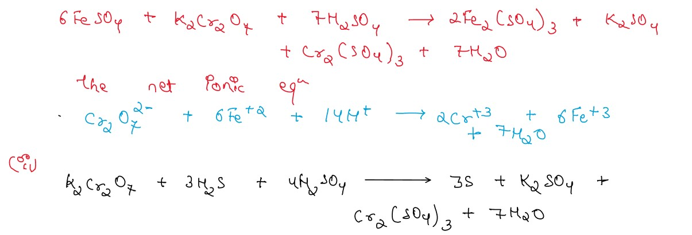
Acidified K2Cr2O7 reacts with H2S to produce
Sulphur,potassium sulphate,Chromium(III) and water
(c) Structure of Cr2O72- ion->
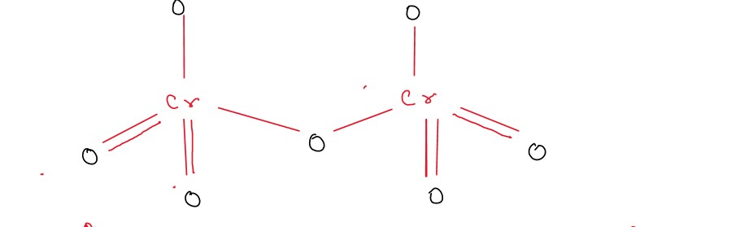
Q8.46
Solution
K2Cr2O7 reacts with H2SO4 and KI to produce
Chromium(III) sulphate,Iodide,potassium sulphate & H2O
(ii) In presence of dilute H2SO4,K2Cr2O7
oxidise ferrous sulphate to ferric sulphate. K2Cr2O7 is reduced to
Chromium sulphate.
Orange colour of solution turns green.
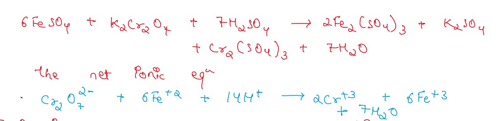
Q8.47
Solution
KMnO4 is prepared from Pyrolusite ore (MnO2).
The finely powdered Pyrolusite ore (MnO2) is fused
with an alkali Hydroxide like KOH in The presence
of air or an oxidising agent like KNO3 to give the dark green
(K2MnO4)
K2MnO4 disproportionate in a neutral or acidic
solution to give KMnO4
(ii)
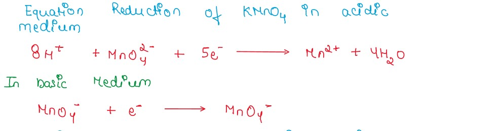
oxidising effect of KMnO4 is maximum in acidic
medium and least in basic medium as in acidic medium the reduction in oxidation state of Mn is
maximum.
H2SO4 and NaOH is used as acid and alkali
Q8.48
Solution
Uses of KMnO4 in the laboratory
- As Laboratory reagent (1% alkaline KMnO4 ) to detect
unsaturation under The
name Baeyer's reagent.
- For volumeteric estimation of ferrous salts,oxalates,iodides etc
Q8.49
Solution
(a)
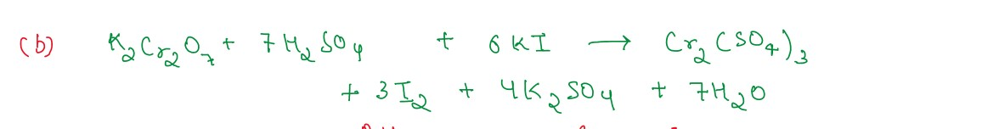
K2Cr2O7 reacts with H2SO4 and KI to produce
Chromium(III) sulphate,Iodide,potassium sulphate & H2O
Q8.50
Solution
(a) Acidified potassium dichromate oxidises potassium iodide to iodine. Potassium dichromate is
reduced
to chromic sulphate - Liberated iodine turns the solution brown.
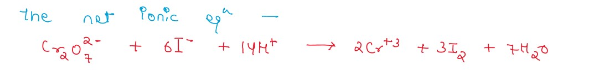
(b)
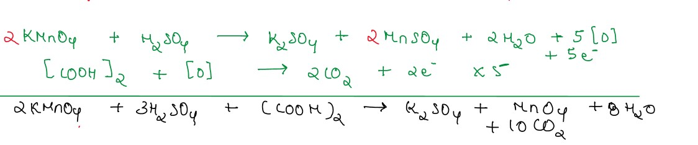
(iii)
chromite ore,on fusion with NaOH,
form sodium chromate ( yellow coloured Compound)
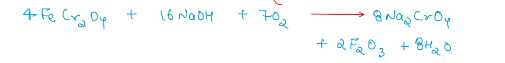
Q8.53
Solution
Preparation of sodium dichromate (Na2Cr2O7) from Sodium chromate
(Na2Cr2O4)
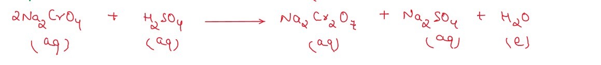
Pottassium dichromate is crystallised -
Preparation of potassium permanganate (KMnO2)
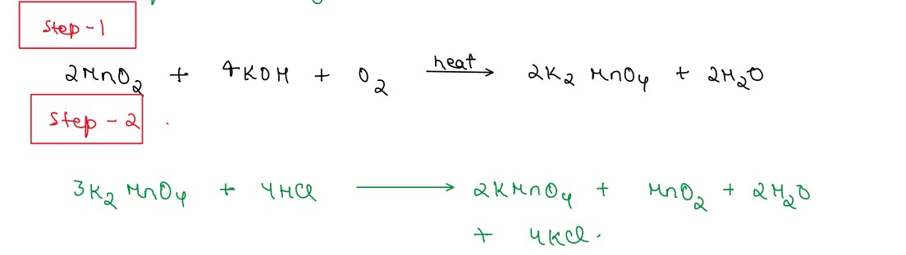